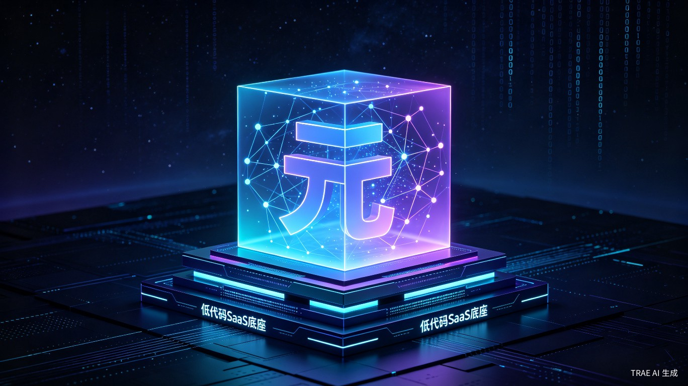

低代码通用本体 SaaS 系统 —— 让每一份知识资产都成为 AI 的可靠基石
通用本体筑基，打造 AI 能力迭代增值底座
当前 AI 行业本体落地存在建模门槛高、维护成本重、 大模型易产生幻觉、知识无法跨行业复用等六大核心痛点。 大量中小团队与业务人员难以搭建可用的标准化知识底座。
长期观察 AI 落地现状，本体作为 AI 可信知识核心却长期停留在实验室或 Demo 演示中。 普通从业者、中小企业无轻量化入门工具，知识资产无法持续沉淀转化， AI 应用价值难以长效增长。
一款云端低代码通用本体 SaaS 系统，内置常识通用本体规则及模板， 支持自然语言快速建模，联动大模型完成知识抽取、语义推理与应用输出。
当前知识本体建设面临的多重障碍
面向广泛的 AI 从业者与企业知识工程需求
快速为 AI 应用搭建标准知识底座，降低模型幻觉，提升输出可信度。
构建高可信智能问答与决策系统，满足行业合规与准确性要求。
无需专业本体工程师即可自主搭建业务本体，快速验证 AI 应用价值。
降低学习曲线，在实践中掌握本体建模与知识工程核心方法。
可量化的效率提升与可持续的商业价值
依托开箱即用的通用基础本体模板，将行业本体搭建周期从数月压缩至数天。 自动化知识对齐与更新功能减少 70% 人工维护工作量， 实现 AI 应用快速迭代上线。
统一标准化知识底座让企业知识形成可循环增值的数字资产， 一套本体可支撑多套 AI 业务复用，大幅降低企业 AI 重复建设投入， 持续释放 AI 长期业务收益。
四大能力支撑 AI 知识底座闭环
内置跨行业通用本体规则与模板，开箱即用，大幅降低入门门槛
支持用自然语言描述业务概念，自动转化为结构化本体定义
联动 LLM 完成知识抽取、实体链接、语义推理与可信输出
知识资产自动对齐与增量更新，保持本体持续鲜活可用
「元启知门」致力于成为 AI 时代的知识基础设施，
通过低代码本体 SaaS 平台，
让每一家企业都能拥有属于自己的高可信知识底座，
实现 AI 能力的持续迭代与增值。